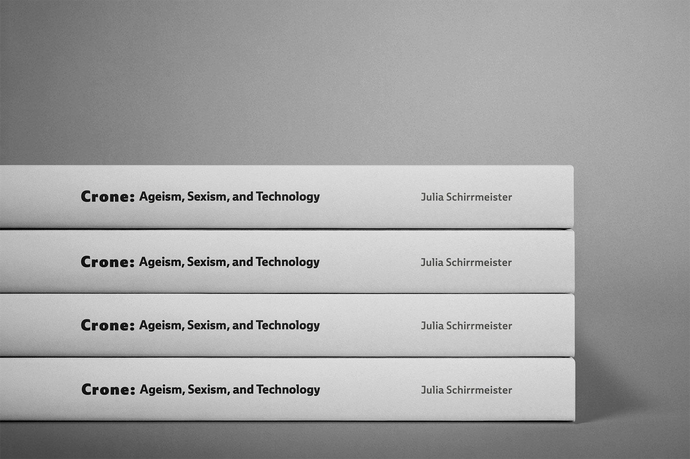
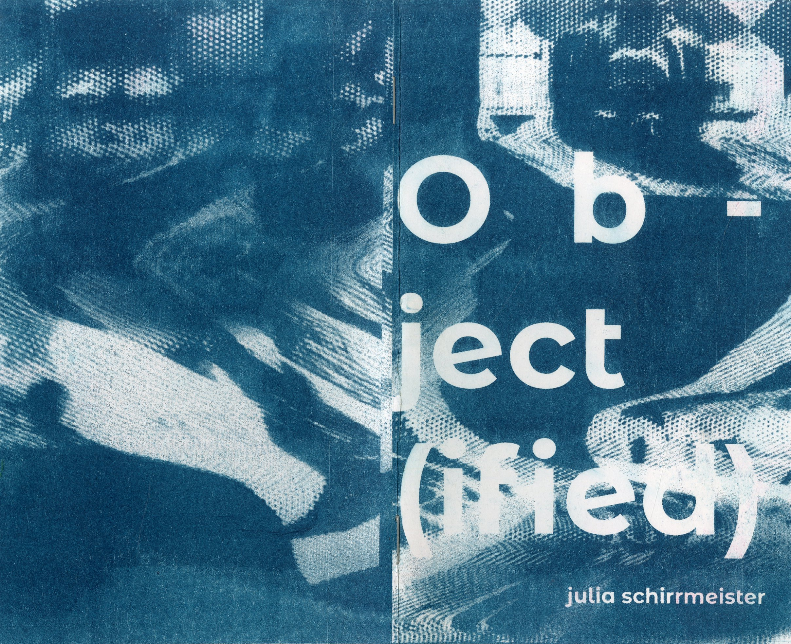

Design rooted
in research.
Art grounded
in craft.
Graphic designer and artist with a strong background in design, scholarly research, writing, and administration. Currently seeking full-time opportunities in New York City.
Clinic Patient Portal
A UX case study redesigning a healthcare patient portal from the ground up. The focus: accessibility, usability, and a design system built to last. Information architecture, wireframes, and final prototypes, all included.
View Case Study
Film Festival Logo Design
Brand identity development for SVA's film program, from early mood boards and sketch iterations through a complete logo system, combination marks, and merchandise mockups.
View ProjectCrone Book Design
An MFA thesis publication built from the ground up, comprising a complete editorial design system: typography scale, grid, visual language, layout iterations, key spreads, and print production.
View Project
Object(ified) Print Publication
A hand-crafted publication where constraint drives the design. Rigorous color and ink strategy, considered typography, and meticulous print production.
View Project
Apollo Library Brand Identity
A full brand identity system for a Science-Fiction Fantasy Library of the 21st Century in San Francisco, CA. Combination marks, color, typography, iconography, a campaign poster series, and a speculative wayfinding system.
View Project